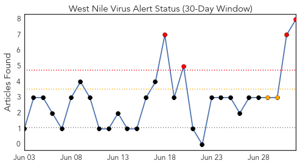
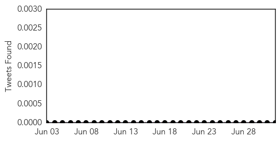
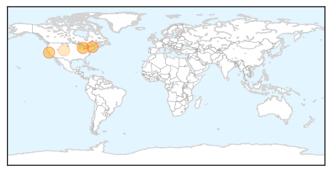

Toggle navigation
Early Warning
Daily Alerts
West Nile Virus
Jul 02, 2014
30 Day Trends
Web: 4
alerts
, 2
warnings
Twitter: 0
alerts
, 0
warnings
Top Articles:
0.975
Contra Costa: Birds, mosquitoes test positive for West Nile
0.970
Michigan health officials say West Nile virus detected in Saginaw County
0.918
EEE virus detected in Vermont mosquitoes
0.882
West Nile virus found in Michigan mosquito pool
0.872
Dead Birds, Mosquitoes in Contra Costa...
0.856
EEE virus detected in Vermont mosquitoes
0.840
Mosquitos, Dead Birds Test Positive For West Nile Virus In Contra Costa County « CBS San Francisco
0.755
Fort Collins not spraying mosquitos until 2 people are infected with West Nile Virus
Top Tweets:
No tweets found for Jul 02, 2014
Web/News Articles

Tweets

Article Locations

Article Confidences